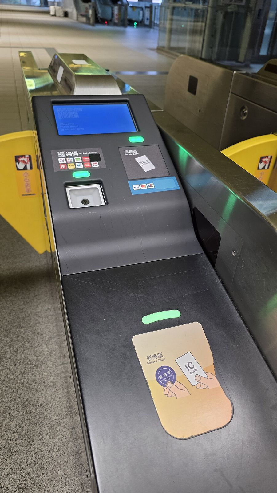
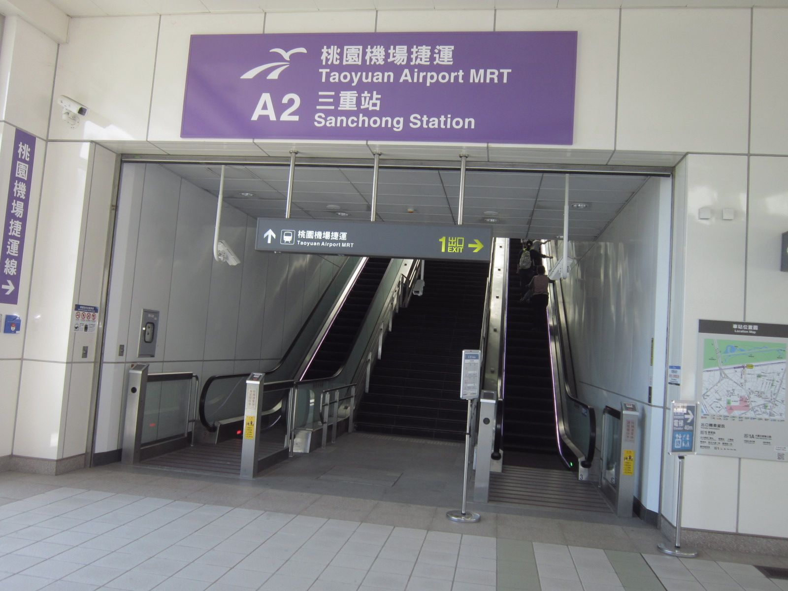

타이베이 MRT 신용카드 탑승, 이지카드 없이 될까?
카드 한 장으로 개찰구를 지나도 되는지, 공항철도에서는 뭐가 다른지, 이지카드를 사야 하는 경우는 언제인지 짚어봤습니다.
게시 · 수정
타이베이 MRT 신용카드 탑승, 이제 이지카드 없이도 될까요? 여행자 사이에서는 공항철도는 되는데 시내 MRT는 됐다·안 됐다 이야기가 갈렸지만, 타이베이 메트로는 2026년 7월 1일부터 모든 역에서 국내외 신용카드와 휴대폰 결제 감응 승차를 열었어요. 타이베이 메트로와 타오위안 공항철도의 공식 안내를 바탕으로 2026년 10월 기준 쓸 수 있는 카드, 찍는 위치, 놓치기 쉬운 차이를 정리해봤어요.
01 · 타이베이 MRT vs 공항철도 신용카드 승차, 한눈에 비교
| 항목 | 타이베이 MRT (臺北捷運) | 타오위안 공항철도 (桃園機場捷運) |
|---|---|---|
| 신용카드 승차 (2026년 10월 기준) | 2026년 7월 1일부터 전 역 개찰구 | 역마다 신용카드 전용 통로 |
| 카드 브랜드 | Visa, Mastercard, JCB, 銀聯(UnionPay), Diners Club, Discover, 체크카드 포함 | Visa, Mastercard, JCB 비접촉 카드(체크카드 포함), 銀聯 |
| 휴대폰 결제 | Apple Pay·Google Pay·Samsung Pay, Apple Pay 익스프레스 모드 지원 | NFC 휴대폰·스마트워치에 등록한 신용카드 |
| 찍는 곳 | 개찰구의 '信用卡' 감응 구역 | '信用卡感應區' (IC카드·토큰 구역과 다름) |
| 요금 | 1회권 요금 그대로 결제, 요금은 방문 전 공식 안내를 확인하세요 | 1회권 공시 요금, 요금은 방문 전 공식 안내를 확인하세요 |
| 할인 | 상시 이용 할인·버스 환승 할인·TPASS 적용 안 됨 | 신용카드 기능 이용 시 할인 없음 |
정리하면 두 노선 모두 비접촉 신용카드로 바로 탈 수 있어요. 다만 신용카드는 일반(성인) 요금으로 한 번씩 결제되는 방식이라, 할인이나 아이 요금이 필요하면 이지카드 같은 교통카드가 여전히 유리합니다.

02 · 타이베이 MRT 신용카드, 이렇게 찍어요
신용카드 칸에 대기 개찰구에는 신용카드, QR 코드, 이지카드(IC 카드) 감응 구역이 따로 있어요. 신용카드나 휴대폰은 '信用卡' 표시 칸에 대고, 피아노 소리와 초록 화살표가 뜨면 지나가면 돼요.
들어갈 때와 같은 카드로 나가기 카드 한 장은 한 사람만 쓸 수 있어요. 휴대폰에 카드를 여러 장 등록해 두었다면 나갈 때 다른 카드가 잡혀 막히는 경우가 있다고 타이베이 메트로가 안내하고 있어요.
아이폰은 익스프레스 모드 Apple Pay 지갑에서 카드를 교통카드(익스프레스 모드)로 설정하면 잠금 해제 없이 찍을 수 있어요. Google Pay·Samsung Pay는 잠금을 풀고 대는 방식이에요.
이지카드 겸용 카드는 위치 주의 이지카드 기능이 붙은 신용카드는 어느 칸에 대느냐로 결제가 갈려요. 신용카드 칸이면 카드 결제, 이지카드 칸이면 충전 잔액에서 빠져나가요.
만료·정지 카드는 안 돼요 은행 승인이 필요해서 유효기간이 지났거나 발급사가 막아 둔 카드는 개찰구를 통과하지 못해요. 해외 결제가 막혀 있지 않은지 출국 전에 카드사 앱에서 확인해 두세요.
공항철도는 신용카드로 바로 탔는데, 시내 MRT에서는 된다는 사람과 안 됐다는 사람이 갈렸어요. — 2026년 7월 전면 개방 전후 여행자 질문과 답변을 요약했어요
03 · 타오위안 공항철도에서 다른 점
신용카드 전용 통로로 공항철도는 모든 개찰구가 아니라 역마다 마련된 신용카드 전용 통로에서 카드를 찍어야 해요. 감응 구역도 이지카드·토큰 구역과 떨어져 있어요.
비접촉 표시 확인 카드 앞면에 Visa·Mastercard·JCB 로고와 비접촉(물결) 표시가 함께 있어야 해요. 銀聯 카드도 안내 대상에 들어가 있어요.
같은 카드, 같은 휴대폰 실물 카드는 들어갈 때와 나갈 때 같은 카드를, 휴대폰은 같은 기기·같은 결제 앱·같은 등록 카드를 써야 해요. 개찰구를 제대로 지나지 않으면 나중에 카드로 요금이 청구될 수 있어요.
잘못 찍었으면 안내소로 이지카드 겸용 신용카드를 IC 카드 구역에 잘못 댔다면 역 안내소에 카드를 보여 주고 처리를 도움받으면 돼요.

04 · 그래도 이지카드가 나은 경우
MRT와 버스를 자주 갈아탈 때 신용카드 승차에는 버스 환승 할인과 타이베이 메트로 상시 이용 할인이 붙지 않아요. 이지카드·아이패스(一卡通) 같은 교통카드는 기존 할인을 그대로 받아요.
아이와 함께일 때 신용카드는 일반 요금으로 결제돼요. 6세 미만 아이는 표를 산 어른과 함께면 무료로 탈 수 있지만, 할인 요금이 필요한 나이라면 교통카드나 창구 안내를 따르는 편이 편해요.
가족이 카드 한 장만 있을 때 신용카드 한 장은 한 사람만 쓸 수 있어요. 일행 중 비접촉 카드가 없는 사람은 파란 토큰 1회권이나 '台北捷運Go' 앱 QR 1회권을 쓰면 돼요.
이지카드를 따로 살지 고민된다면 타이베이 첫 여행, 이지카드만으로 충분할까와 이지카드 잔액 조회·충전을, 공항에 늦게 도착하는 날은 타오위안공항 새벽 도착 교통도 함께 보세요. MRT로 이동한 뒤 먹을 곳은 타이베이 맛집 지도와 타이베이 우육면 맛집, 타이베이 대만식 맛집, 상세 페이지 Wang's Broth에서 고르면 돼요.
지도에서 타이베이 우육면 맛집도 확인해보세요
MRT역 근처에서 먹을 곳을 지도에서 미리 찜해 두세요.